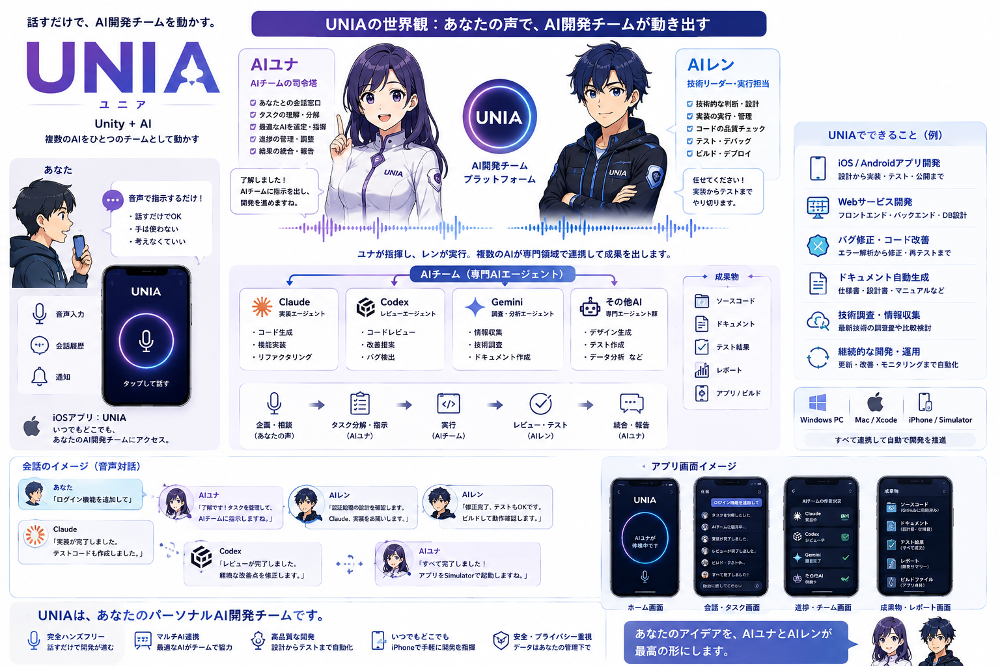

iPhoneに話しかけるだけで、PC上のClaude Codeが調査・実装・テストまで実行し、結果が音声で返ってきます。
画面もキーボードも触らずに、開発を前に進めるための仕組みです。

話すだけで開発が進みます。画面を見ず、キーボードも触らずに、AIとの連続した会話だけで実装まで到達することを目指した設計です。
Claude・Codex・Geminiなど複数のAIが、実装・レビュー・調査といった専門領域を分担。1つのAIに全部やらせるより精度が上がります。
移動中や作業の合間でも、iPhoneから自分のAI開発チームに指示できます。思いついたことをその場で開発に反映できます。
AIで開発が速くなっても、結局はPCの前にいる時間しか進みません。ここを外したいというのが出発点でした。
アイデアが浮かんでもメモを取るだけ。PCの前に戻る頃には熱量も文脈も薄れています。
やりたいことは頭の中にあるのに、それを文章にする作業が挟まるだけで着手のハードルが上がります。
実装が得意なAI、レビューが得意なAI、調査が得意なAI。切り替えと結果の統合を人がやっていては速くなりません。
あなたが話す相手は1人だけです。指示の分解も、AIの選定も、結果の統合も、AI側が引き受けます。
あなたがするのは最初の一言だけ。あとはAIチームの中で処理が進み、結果が音声で返ってきます。
やりたいことを話しかけます。整理されていない状態で構いません。
内容を理解して作業単位に分解し、担当するAIを決めて指示を出します。
実装・レビュー・調査を各AIが並行して進めます。
技術面を確認し、テストとビルドまで通します。
結果をまとめ、音声で報告します。次の指示をまた声で返せます。
ひとこと話しかけるだけで、チーム内で作業が回り、完了が音声で返ってきます。
設計から実装・テスト・公開まで、開発の各工程を音声から動かせます。
設計から実装・テスト・公開まで
フロントエンド・バックエンド・DB設計
エラー解析から修正・再テストまで
仕様書・設計書・マニュアルなど
最新技術の調査や比較検討
更新・改善・モニタリングまで自動化
iPhoneアプリは「話す・聞く」に徹し、開発の実行と読み上げ文の生成はPC側のサーバーが担当します。
※ PCの画面・キーボード・マウスをエミュレートする方式は採っていません。CLIと直接連携することで、 画面の状態に左右されず安定して動作させています。
自社開発として進めているプロジェクトで、製品としての提供・販売は行っていません。
掲載している構成・画面は開発中のものであり、今後変更される可能性があります。
「音声で連続して対話しながら開発を進められること」を最優先の要件として、Bridge・iOSアプリ・
Claude Code CLI連携を実装しています。同様の仕組みを自社で構築したい場合は、ご相談ください。
「こんなことを自動化したい」というアイデアだけでも大歓迎です。
通常1営業日以内にご返信します